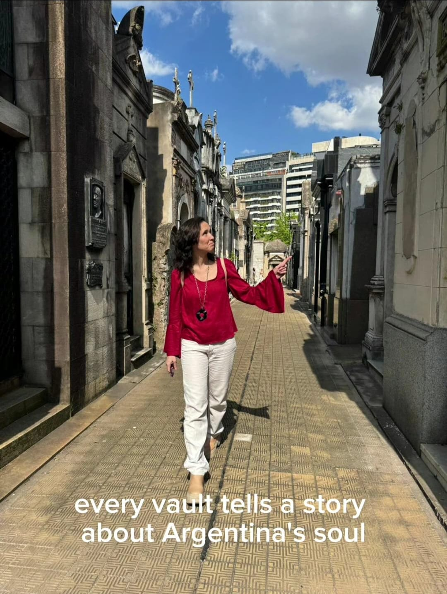

Sobre BA Thematic Walking Tours
Maria Luz La Rocca - Guia experta local

Luz es una experta en turismo argentino y guía de habla inglesa, apasionada por revelar lo oculto. Estudió Turismo en Buenos Aires y fue guía del Teatro Colón, en la misma ciudad. Luego, durante los 6 años que vivió en Londres, se fascinó con la arquitectura y cultura de las diferentes ciudades europeas que visitó y volvió con el interés de revalorizar la propia por medio de visitas a extranjeros. Su fascinación por la masonería comenzó mientras observaba la arquitectura en Europa y Buenos Aires, donde convergen geometría, simbolismo y poder.
Con años de experiencia guiando a visitantes internacionales y recorriendo diversos puntos de interés cultural en numerosas ciudades europeas, transforma cada paseo en una exploración íntima del alma oculta de la ciudad. Luz cree que cada monumento, cada símbolo y cada historia encierra un mensaje, si uno sabe mirar.
“Mis tours no se centran en lo que ves, sino en lo que descubres”